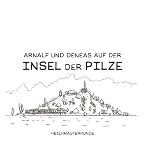

Arnalf & Deneas auf der Insel der Pilze
2 - Heilkräuterkunde

Verfolge die wundersame Reise des Hasen Arnalf und der Maus Deneas auf der Insel der Pilze und erfahre etwas über Heilkräuter - oder auch nicht. Ob Calendula, Sanikel, Kalmus oder Bockshornklee - Arnalf teilt gerne sein (Un)Wissen über Heilkräuter. Warnung: Ist, wie Fliegenpilze, mit äusserster Vorsicht zu geniessen. Ein Bilderbuch für Jung und Alt.
ISBN-10: 3752974338
ISBN-13: 978-3752974331